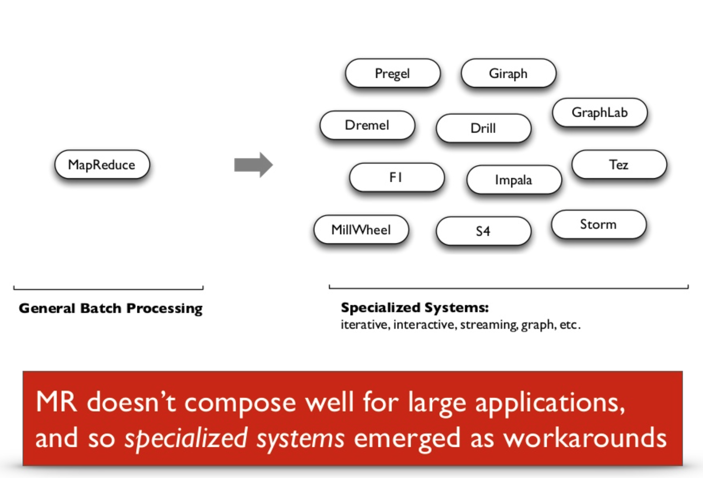
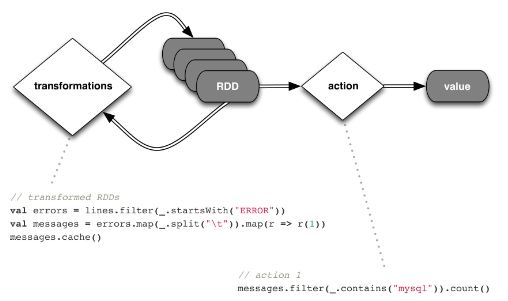

Introduction to Apache Spark
Presented by Myles Baker / @mydpy
What is Spark?
Apache Spark is a cluster computing platform designed to be fast and general-purpose
- In-memory computing capabilities deliver speed
- General execution model supports many diverse use cases
- Native APIs in Java, Scala, Python
- Supports batch and real-time analysis

Why Spark?
Spark is quickly becoming popular

This paradigm unlocks intelligence on your data not previously possible
...but is designed for batch applications. What about real-time?
...that requires special tools and imposes resource demands
How fast is Spark?
- 3x as fast
- 10x fewer machines

...but may not replace Hadoop yet
- Hadoop may be better if data spills into memory
- Spark staffing can be more costly than Hadoop
- Spark security is in its infancy
How does Spark work?
A new abstraction: Resilient, Distributed Datasets
Resilient Distributed Dataset: An abstraction that enables efficient data reuse in distributed processing environments
RDD focal points:
- Fault-tolerant, parallel data structure
- For interactive, iterative operations
- Immutable
- Transformations are logged and performed lazily
- User-controlled persistence and partitioning
Spark's implementation of RDDs:
- Language-intergrated interface (functions inline, etc.)
- Runs inside a JVM to easily interact with Hadoop filesystem
- Statically typed for performance
Demo
Questions before we get started?
Getting started with Spark
- Download the source from github or Apache and run locally.
- Download the Cloudera Distribution Hadoop 5 QuickStart Virtual Machine. This requires a virtual machine player like VMWare or VirtualBox (Make sure VT-x is enabled in your BIOS). This runs Spark in a pseudo-distributed stand-alone mode and allows you to run it inside a Yarn container with some configuration changes. You also can run Spark locally out-of-the-box with all dependencies installed.
- Download the Hortonworks virtual machine. It works very similar to Cloudera's offering.
Launching Spark
>spark-shell
>pyspark
>spark-submit --class <class_name> --master <context_mode> \
><jar_file> [args]
Interactive Spark
15/04/16 11:50:48 INFO SecurityManager: Changing view acls to: cloudera
15/04/16 11:50:48 INFO SecurityManager: Changing modify acls to: cloudera
15/04/16 11:50:48 INFO SecurityManager: SecurityManager: authentication disabled; ui acls disabled; users with view permissions: Set(cloudera); users with modify permissions: Set(cloudera)
15/04/16 11:50:48 INFO HttpServer: Starting HTTP Server
15/04/16 11:50:48 INFO Utils: Successfully started service 'HTTP class server' on port 43049.
Welcome to
____ __
/ __/__ ___ _____/ /__
_\ \/ _ \/ _ `/ __/ '_/
/___/ .__/\_,_/_/ /_/\_\ version 1.2.0
/_/
Using Scala version 2.10.4 (Java HotSpot(TM) 64-Bit Server VM, Java 1.7.0_67)
Type in expressions to have them evaluated.
Type :help for more information.
15/04/16 11:50:54 WARN Utils: Your hostname, quickstart.cloudera resolves to a loopback address: 127.0.0.1; using 10.0.2.15 instead (on interface eth0)
15/04/16 11:50:54 WARN Utils: Set SPARK_LOCAL_IP if you need to bind to another address
15/04/16 11:50:54 INFO SecurityManager: Changing view acls to: cloudera
15/04/16 11:50:54 INFO SecurityManager: Changing modify acls to: cloudera
15/04/16 11:50:54 INFO SecurityManager: SecurityManager: authentication disabled; ui acls disabled; users with view permissions: Set(cloudera); users with modify permissions: Set(cloudera)
15/04/16 11:50:55 INFO Slf4jLogger: Slf4jLogger started
15/04/16 11:50:55 INFO Remoting: Starting remoting
15/04/16 11:50:55 INFO Remoting: Remoting started; listening on addresses :[akka.tcp://sparkDriver@10.0.2.15:51331]
15/04/16 11:50:55 INFO Remoting: Remoting now listens on addresses: [akka.tcp://sparkDriver@10.0.2.15:51331]
15/04/16 11:50:55 INFO Utils: Successfully started service 'sparkDriver' on port 51331.
15/04/16 11:50:56 INFO SparkEnv: Registering MapOutputTracker
15/04/16 11:50:56 INFO SparkEnv: Registering BlockManagerMaster
15/04/16 11:50:56 INFO DiskBlockManager: Created local directory at /tmp/spark-local-20150416115056-a439
15/04/16 11:50:56 INFO MemoryStore: MemoryStore started with capacity 265.4 MB
15/04/16 11:50:56 INFO HttpFileServer: HTTP File server directory is /tmp/spark-cc9f46f6-5288-48b0-b106-ee9281b10156
15/04/16 11:50:56 INFO HttpServer: Starting HTTP Server
15/04/16 11:50:56 INFO Utils: Successfully started service 'HTTP file server' on port 41679.
15/04/16 11:50:56 INFO Utils: Successfully started service 'SparkUI' on port 4040.
15/04/16 11:50:56 INFO SparkUI: Started SparkUI at http://10.0.2.15:4040
15/04/16 11:50:57 INFO AppClient$ClientActor: Connecting to master spark://quickstart.cloudera:7077...
15/04/16 11:50:57 INFO SparkDeploySchedulerBackend: Connected to Spark cluster with app ID app-20150416115057-0001
15/04/16 11:50:57 INFO AppClient$ClientActor: Executor added: app-20150416115057-0001/0 on worker-20150408095110-10.0.2.15-7078 (10.0.2.15:7078) with 2 cores
15/04/16 11:50:57 INFO SparkDeploySchedulerBackend: Granted executor ID app-20150416115057-0001/0 on hostPort 10.0.2.15:7078 with 2 cores, 512.0 MB RAM
15/04/16 11:50:57 INFO AppClient$ClientActor: Executor updated: app-20150416115057-0001/0 is now LOADING
15/04/16 11:50:57 INFO AppClient$ClientActor: Executor updated: app-20150416115057-0001/0 is now RUNNING
15/04/16 11:50:58 INFO NettyBlockTransferService: Server created on 40182
15/04/16 11:50:58 INFO BlockManagerMaster: Trying to register BlockManager
15/04/16 11:50:58 INFO BlockManagerMasterActor: Registering block manager 10.0.2.15:40182 with 265.4 MB RAM, BlockManagerId(, 10.0.2.15, 40182)
15/04/16 11:50:58 INFO BlockManagerMaster: Registered BlockManager
15/04/16 11:51:07 INFO EventLoggingListener: Logging events to hdfs://quickstart.cloudera:8020/user/spark/applicationHistory/app-20150416115057-0001
15/04/16 11:51:13 INFO SparkDeploySchedulerBackend: SchedulerBackend is ready for scheduling beginning after reached minRegisteredResourcesRatio: 0.0
15/04/16 11:51:14 INFO SparkILoop: Created spark context..
Spark context available as sc.
scala> 15/04/16 11:51:18 INFO SparkDeploySchedulerBackend: Registered executor: Actor[akka.tcp://sparkExecutor@10.0.2.15:47007/user/Executor#-876449197] with ID 0
15/04/16 11:51:20 INFO BlockManagerMasterActor: Registering block manager 10.0.2.15:52204 with 265.4 MB RAM, BlockManagerId(0, 10.0.2.15, 52204)
scala> sc
res38: org.apache.spark.SparkContext = org.apache.spark.SparkContext@5f4d088e
Creating an RDD
scala> val rdd = sc.textFile("spark-input/boa-constrictor")
15/04/16 12:36:03 INFO MemoryStore: ensureFreeSpace(259918) called with curMem=2248344, maxMem=278302556
15/04/16 12:36:03 INFO MemoryStore: Block broadcast_32 stored as values in memory (estimated size 253.8 KB, free 263.0 MB)
15/04/16 12:36:04 INFO MemoryStore: ensureFreeSpace(21134) called with curMem=2508262, maxMem=278302556
15/04/16 12:36:04 INFO MemoryStore: Block broadcast_32_piece0 stored as bytes in memory (estimated size 20.6 KB, free 263.0 MB)
15/04/16 12:36:04 INFO BlockManagerInfo: Added broadcast_32_piece0 in memory on 10.0.2.15:40182 (size: 20.6 KB, free: 265.2 MB)
15/04/16 12:36:04 INFO BlockManagerMaster: Updated info of block broadcast_32_piece0
15/04/16 12:36:04 INFO SparkContext: Created broadcast 32 from textFile at <console>:12
rdd: org.apache.spark.rdd.RDD[String] = spark-input/boa-constrictor MappedRDD[40] at textFile at <console>:12
scala> val silverstein = rdd.collect
...
silverstein: Array[String] = Array(
Im being swallered by a Boa Constrictor, a Boa Constrictor, a Boa Constrictor,
Im being swallered by a Boa Constrictor,
and I dont - like snakes - one bit!,
Oh no, he swallered my toe.,
Oh gee, he swallered my knee.,
Oh fiddle, he swallered my middle.,
Oh what a pest, he swallered my chest.,
Oh heck, he swallered my neck.,
Oh, dread, he swallered my - (BURP)
)
Transforming an RDD
val BoaConstrictor = rdd.filter(line => line.contains("Boa"))
BoaConstrictor.collect
res39: Array[String] = Array(
Im being swallered by a Boa Constrictor, a Boa Constrictor, a Boa Constrictor,
Im being swallered by a Boa Constrictor
)
Acting on an RDD
val words = rdd.flatMap(line => line.split(" "))
val counts = words.map(word => (word,1)).reduceByKey{case (x,y) => x+y}
counts.collect
res40: Array[(String, Int)] = Array(
(don't,1), (pest,,1), (fiddle,,1), (one,1), (bit!,1), ((BURP),1),
(toe.,1), (Boa,4), (Constrictor,,1), (my,6), (what,1), (dread,,1),
(Constrictor,3), (heck,,1), (neck.,1), (swallered,8), (Oh,,1),
(a,5), (snakes,1), (no,,1), (I,1), (he,6), (Oh,5), (middle.,1),
(by,2), (-,3), (like,1), (I'm,2), (and,1), (chest.,1), (gee,,1), (being,2), (knee.,1)
)
Analysis using RDDs
val Boa = counts.filter(pair => pair._1.equals("Boa"))
Boa.collect
res41: Array[(String, Int)] = Array((Boa,4))
Java Example using Spark-submit
import java.util.Arrays;
import java.util.List;
import java.lang.Iterable;
import scala.Tuple2;
import org.apache.commons.lang.StringUtils;
import org.apache.spark.api.java.*
import org.apache.spark.api.java.function.*
public class WordCount {
public static void main(String[] args) throws Exception {
String master = "local";
JavaSparkContext sc = new JavaSparkContext(
master, "wordcount", System.getenv("SPARK_HOME"), System.getenv("JARS"));
JavaRDD<String> rdd = sc.textFile("spark-input/boa-constrictor");
JavaPairRDD<String, Integer> counts = rdd.flatMap(
new FlatMapFunction<String, String>() {
public Iterable<String> call(String x) {
return Arrays.asList(x.split(" "));
}}).mapToPair(new PairFunction<String, String, Integer>(){
public Tuple2<String, Integer> call(String x){
return new Tuple2(x, 1);
}}).reduceByKey(new Function2<Integer, Integer, Integer>(){
public Integer call(Integer x, Integer y){ return x+y;}});
counts.saveAsTextFile("output/boa-constrictor");
}
}
>spark-submit --class WordCount --master spark://quickstart.cloudera:7077 \
>spark-clt-demo.jar
Questions?
Appendix: How do I learn Spark?
- Learning Spark
- Spark Summit 2014 Tutorial Videos
Appendix: Scala
Content courtesy of David Der / @davidder
Functional
public List<Product> getProducts(List<Order> orders) {
List<Product> products = new ArrayList<Product>();
for (Order order : orders) {
products.addAll(order.getProducts());
}
return products;
}
Vs.
def products = orders.flatMap(o => o.products)
Spark operations look
awfully familiar...
- map( { .. } )
- filter( { .. } )
- flatMap( { .. } )
- reduceByKey( { .. } )
- reduce( { .. } )
- foreach( { .. } )
Java 7
JavaRDD<String> distFile = sc.textFile("README.md");
// Map each line to multiple word
JavaRDD<String> words = distFile.flatMap(
new FlatMapFunction<String, String>() {
public Iterable<String> call(String line) {
return Arrays.asList(line.split(" "));
}
});
Java 8
JavaRDD<String> distFile = sc.textFile("README.md");
JavaRDD<String> words =
distFile.flatMap(line -> Arrays.asList(line.split(" ")));